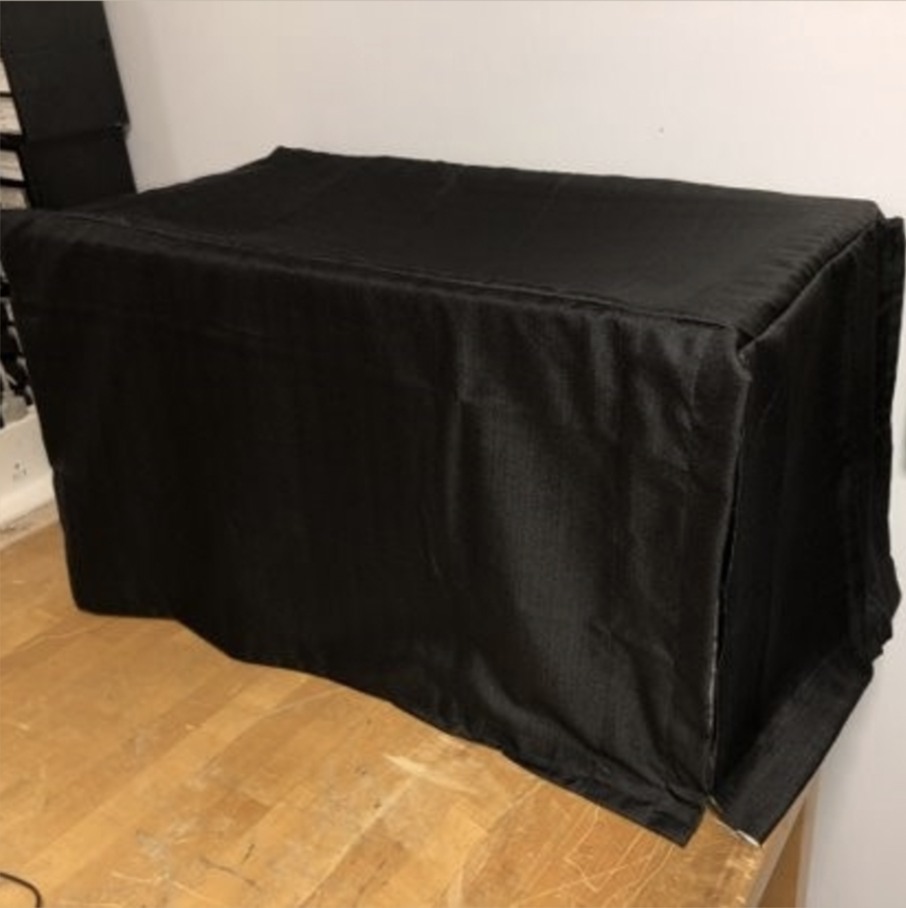
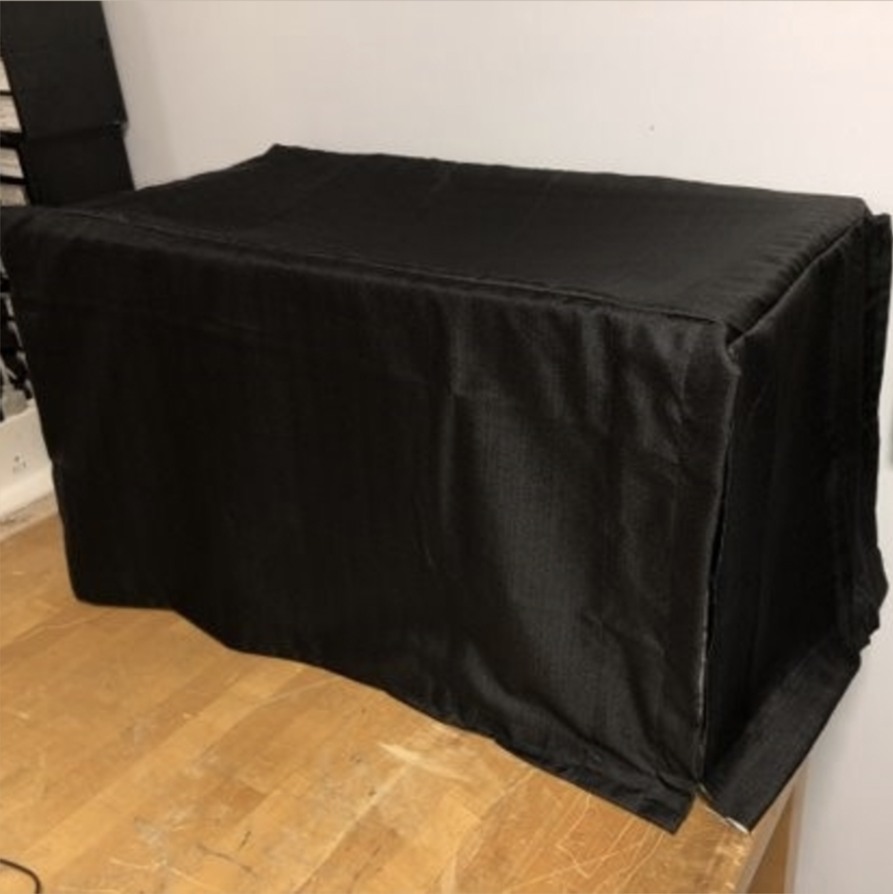

What is Light Loop?
Sponsor
Mayo Clinic is the sponsor for Light Loop.Mayo Clinic is a nonprofit organization committed to clinical practice, education and research, providing expert, whole-person care to everyone who needs healing. Our point of contact through Mayo Clinic is Dr. Antonio Forte.
For more information on Mayo Clinic see the link below:
Team 307 (Light Loop) Members
Peter Christian

Taelor Campbell
Ben Marmoll
Alexandra Puckett
Maddie Schuh
General Public Abstract
Initial Experimentation
Our initial experiment was used to determine an ideal wavelength for penetration into tissue. To mimic human soft tissue we used Intralipid solution diluted with water. Intralipid mimics the scattering and absorbtion properties of soft tissue well, making it a commonly used soft tissue phantom.
To determine an ideal wavelength, we used a Spectrometer to pulse wavelengths between 650nm and 1100nm. This range is just above and just below the near infrared range. As infrared is strongly absorbed by water and visible radiation is strongly absorbed by hemoglobin, a slightly expanded near infrared range was utilized to observe these areas of the spectrum.
Variable solutions similar to those on the graphic on the top left were used to ensure reliability of the results. The Intralipid was diluted three times, it initially began at 20% dilution with water, and was further diluted by 50% of the original dilution, then 90% of the original dilution. Ink trials were then performed to increase the inherit absorption of the Intralipid, creating a greater resemblance to soft tissue.
​
To interpret our results, it was determined that the lowest absorption indicated the greatest penetration wavelength. Any absorption that peaks at 10 means that it is too high to be recorded by our scale of measurement, making it unreliable at those points. As the scale approaches 850nm, the absorption becomes more consistent. The lowest absorption is at 850nm, revealing 850nm as the ideal wavelength for soft tissue penetration. The baseline, a water cylinder, is referenced at the bottom of each graph. Based on this wavelength, the ideal laser diode was selected for further experimentation which is indicated on the bottom left.

Initial Experimentation Results


Further Experimentation
After determining the ideal wavelength for experimentation, the next step determines whether receivers can be used to detect the difference between solutions of high absorption and low absorption and of high scattering and low scattering.
The experimental setup for this step involved 3D printing a structure to snuggly surround a 100ml cylinder with receivers and a single 850nm laser diode, depicted as a model and a final design to the left. A blackout box is used to encapsulate the system and to adhere to laser safety guidelines, depicted below.
 

To test different corner cases (high absorption, high scattering - high absorption, low scattering - low absorption, high scattering - low absorption, low scattering) different substances are used in the inner beaker. These cases are illustrated below as well as the experimental setup.

A challenge presented by this was identifying substances with these corner case properties and determining their exact scattering and absorption coefficients. As a progressive step, the substances water, Intralipid, ink, and sand were determined to be suitable as water has low scattering and absorbance, Intralipid has average absorbance and average scattering properties, ink has high absorbance and low scattering, and sand has high scattering and low absorbance. In future experimentation, the identification of the exact scattering and absorption coefficients should be determined to reveal governing equations for the output of the receivers in relation to these properties. This would help apply the system to identify different tissue densities.
Detailed Design
Initially, the final product for the Light Loop was expected to be a system that pulsed a laser through a human finger, labeled as "Patient", and projected output to an external device. This system is displayed in Figure A below. The device featured one laser emitter and three photodiode receivers. This output would then rely on the output voltage received by the lasers to map an image to an external device, i.e. a laptop, using Hounsfield Scaling. The Light Loop device design is shown in Figure B below and reflects 14 receivers and 1 Near Infrared Laser.
Figure B

The use of a single laser was a consistent design decision throughout as it resulted in more palatable output and was not overwhelming to read and consider. As our final design shifted away from creating a physically mapped output, one laser was sufficient to provide a proof of concept. This proof of concept centralized on varying absorption and scattering of substances that would have light pulsed through them. This would be used to prove that Near Infrared light would be sufficient to detect minute variations in the density, reflection, absorption, scattering, and other properties of soft tissue in order to eventually map it based on the differences in voltage of receiver outputs. A final design goal was also to create a governing equation to map the relation of absorption, scattering, angle between laser and substrate, and output voltage of the receivers.
An Oscilloscope was initially used to collect results of our experiments but was imprecise. To increase precision, an MSP430 was intended to be used with a SD card to collect data output from our experimental trials. This would help reduce the amount of time required to complete all trials of our experiments. After some trials, the SD card did not collect data as expected and erased much of our data. In consideration of our timeline, we moved towards manually collecting outputs from Visual Studios and inputting them in an excel document.
Our design initially began using a breadboard with jumper wires to connect photodiodes which can be seen in Figure C below, the Oscilloscope or MSP430, the power supply, and the lasers. This connection was loose and presented much noise in our outputs and often resulted in failed trials. To increase the reliability of our results and reduce the amount of failed trials, the system was soldered together with all parts except for the loose wires used to connect to the power supply and Oscilloscope or MSP430. This reduced the noise of the system and increased consistency and reliability of results as expected.
Final Detailed Design
In the final design, a circular, 3D printed loop was used with 5 photodiode receivers and 1 laser emitter. The amount of receivers was chosen to create an even angle distribution around the loop for preliminary results. While the design entailed 5 receivers, two of them became defunct in our initial experimentation and only three diodes were viable. We used 5 holes in the oriented loop and simply moved the 3 diodes around the loop in between tests to collect complete results. We will consider this to be a 5 diode output result as our final design.
A MSP430 was used to intake results from the photodiode receivers more efficiently. This system was connected to each of the photodiode receivers to collect the voltage output. A C program was used to collect the data of the 3 functioning receivers 3 at a time and computed the average of the outputs, outputting one voltage for each receiver to collect for each concentration trial of our substances. This data was compiled into excel documents to review and produce output charts.
Our final circuit design that connected each of the inputs and outputs as well as parts is pictured in Figure D below. A gain of 28.5 was used, incorporating resistors of 1.8k. This gain provided a max output voltage of around 3.1V. This was done because the MSP430 microcontroller takes a max voltage to its GPIO pins of 3.3V. The MSP430 also has a 12 bit ADC which means it is capable of discerning 4096 different values. It has a resolution of 805uV. This was sufficient to hold enough specificity in data output and reflected differences in concentrations of the substances that were used in experimentation.
The substance used to mimic human soft tissue, Intralipid, mimicked the scattering and absorption properties of human soft tissue. To fully utilize these properties, the experiment was centered around defining the voltage output in relation to these properties. The designated output for the final design was centered around the connection between voltage, angle of receiver, and relation to absorption and scattering for this reason. Substances used to test and produce output for our design were Intralipid (high scattering and high absorption), water (low scattering and absorption), and water with India Ink (low scattering, high absorption). India Ink was used in the water as India Ink in Intralipid mimics the absorption properties of soft tissue better than Intralipid alone, so we applied this concept to better the absorption properties of the water. From experimentation with a spectrometer, the absorption using India Ink was notably high and difficult to read when used in conjunction with Intralipid, especially when used with Intralipid at its maximum concentration. Readings were consistent at times with expected results for Intralipid alone, but not consistent enough to pursue its combined usage. Using India Ink with water was a good alternative for our results. The substances intralipid and water and ink were used at different concentration levels to determine how increased absorption or scattering affected output results to prove our concept.
Our goal of proving the concept of usage of near infrared right in imaging technology was deemed to be more sufficient and manageable than producing a density mapped image of a human finger. With the regulations on using a human for experimentation and the timeline of the semester, this was a more efficient and centralized final design.